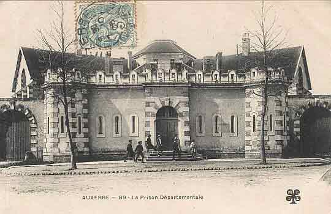
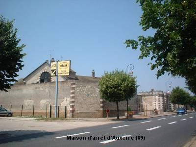
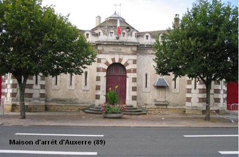
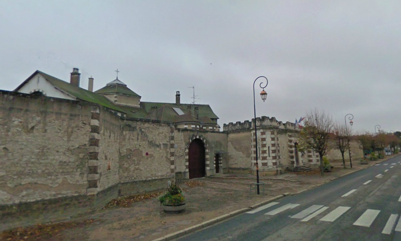
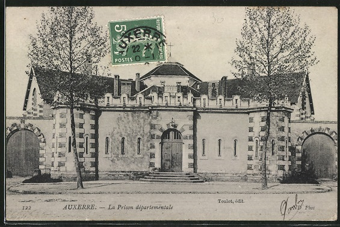
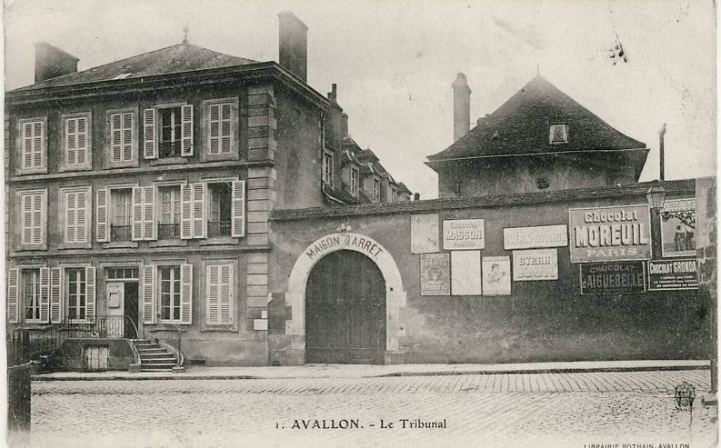

| Département | Images | Ville | Nom | Adresse | Période | Capacité | Histoire du lieu | Nombre d'exécutions |
| Yonne (89) |      |
Auxerre | Maison d'arrêt, de justice et de correction | 13, avenue Charles de Gaulle (ex-avenue de Paris) | En service depuis 1853 | 104 places (1962) 102 places (2015) |
Au sortir du centre-ville sur la route de Paris, la prison d'Auxerre était voisine de l'hôpital psychiatrique. Derrière une entrée fortifiée bicolore, elle se compose de trois bâtiments en Y reliés par une rotonde centrale. En surpopulation (environ 180 détenus à l'été 2013, soit un taux d'occupation de 170 %), | Quatre exécutions en 1912, 1943, 1947 et 1949 |
| Yonne (89) |  |
Avallon | Maison d'arrêt et de correction | 6 ter, rue Bocquillot | -1926 | La prison d'Avallon, durant quatre siècles, n'a quasiment pas bougé : la démolition des anciennes geôles a sans doute permis la construction du palais de justice et de la maison d'arrêt mitoyenne. Les bâtiments de la prison ont été démolis. Fermé en 2009, le tribunal a été vendu aux enchères 325.000 € en août 2011. Rebaptisé "galerie Lazare", le tribunal sert désormais de lieu d'exposition culturel et de salle de vente privée. | Aucune exécution | |
| Yonne (89) | Joigny | Maison d'arrêt et de correction | 12, rue des Fossés-Saint-Jean | -1926 | Démolie pour construire un immeuble et un parking. | Aucune exécution. | ||
| Yonne (89) | Sens | Maison d'arrêt et de correction | Angle des rues de l'Épée et du Palais de Justice | -1926 | Les salles de l'ancien palais royal du XIe siècle, où l'Histoire retient que Louis IX passa sa nuit de noces avec Marguerite de Provence, accueillent la justice de Sens depuis plus de quatre cents ans. Reconstruit à la Renaissance pour devenir le bailliage, puis le présidial, le palais conserve son rôle de lieu de justice après la Révolution. L'aile Sud, ellr, est consacrée à la maison d'arrêt jusqu'à l'entre-deux-guerres, avant d'être démolie pour construire de nouveaux bâtiments. | Aucune exécution. | ||
| Yonne (89) | Tonnerre | Maison d'arrêt et de correction | Rue de la Varence | -1926 | La prison se trouvait dans une rue adjacente de la rue Vaucorbe, où se tenait le palais de justice. | Aucune exécution |
{kind=link}
{kind=link}
{kind=link}
{kind=link}
{kind=link}
{kind=link}